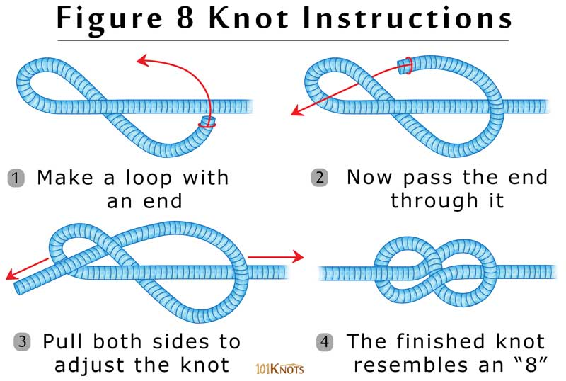

The figure eight knot creates a stopper wherever you need one on a rope, though the steps are also steps you take to create several other knots.
How to tie a figure eight:
To tie a figure eight, also known as a Flemish bend, simply pass the free end of a line over itself to form a loop. Continue under and around the line, and finish the knot by passing the working end down through the original loop.
